// WEB · E-COMMERCE · SKINCARE
Flora & Fawn
A storefront for an organic skincare brand: a calm, premium landing page, and the set of reusable components behind it, with every hover, menu and carousel state designed rather than left to chance.
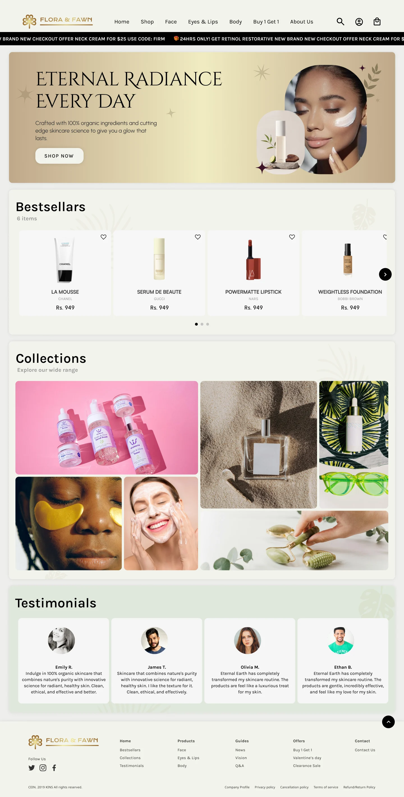
// 01 — THE PAGE
Calm and premium, but still a working shop
Organic skincare sells on feeling: soft light, natural textures, a sense of care. But a storefront also has to push offers, surface bestsellers and help people find the right product fast. The page balances both, top to bottom:
- Announcement bar. Time-limited offers and promo codes move through one slim strip instead of pop-ups.
- Navigation. Shop, Face, Eyes & Lips and Body each open a mega menu; search, account and bag stay one click away.
- Hero. "Eternal Radiance Every Day" sets the tone: soft gold, generous space, one clear Shop Now.
- Bestsellers. A carousel of product cards with brand, price and a wishlist heart.
- Collections. An editorial photo grid; each tile reveals its collection name on hover.
- Testimonials and footer. Social proof, then every route out of the page, from guides to returns policy.
// 02 — BUILT FROM COMPONENTS
Every state, designed
Each interactive piece was built as a Figma component with its states side by side: default and hover, empty and saved, page one, two and three. The page is assembled from them, and the behaviour is specified rather than guessed at. Below, those exact frames are wired up so you can try them.
NAVIGATION
Mega menus, organised by how people shop
Shop is grouped by product type, ingredient, concern and skin type, so people can start from whatever they already know. Face, Eyes & Lips and Body split makeup from care.
Pick a menu
COLLECTIONS
Photography first, labels on intent
At rest, the grid is pure photography. When you hover, the tile dims slightly and the collection name appears with an arrow, so the page stays calm until someone shows interest.
Hover over a tile (or tap on mobile)
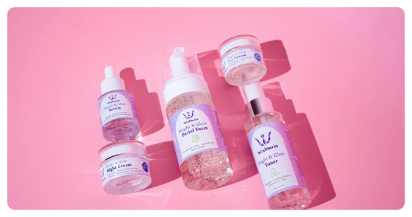
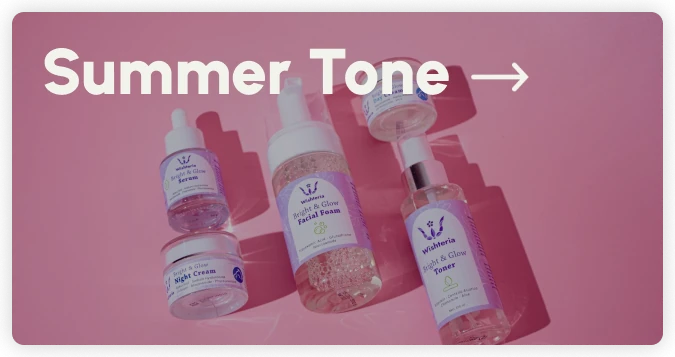
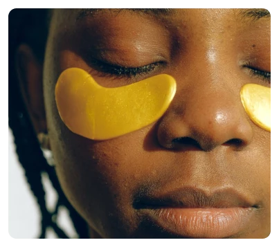
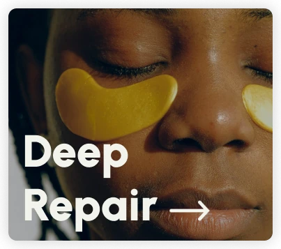
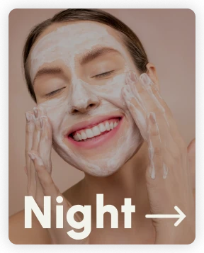
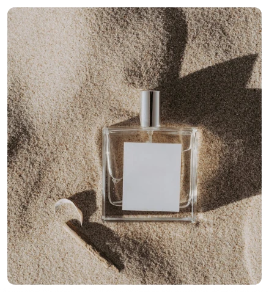
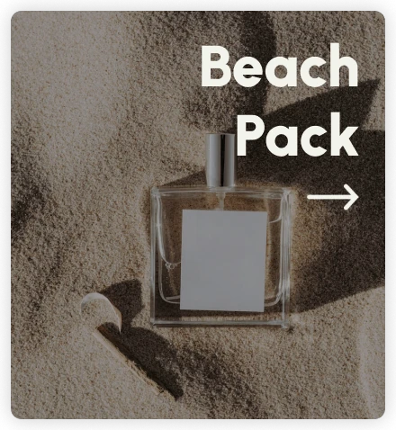
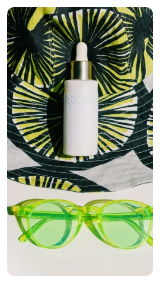
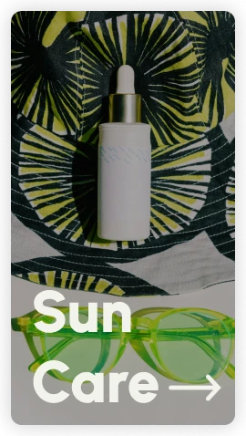
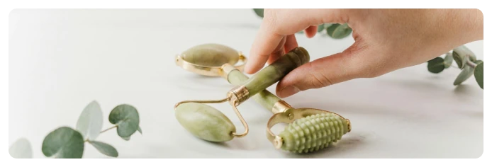
PRODUCT CARDS
One card, every product
Image, name, brand and price in a fixed order, with the wishlist heart always in the same corner. On hover the card lifts with a soft shadow to show it's clickable.
Hover over a card
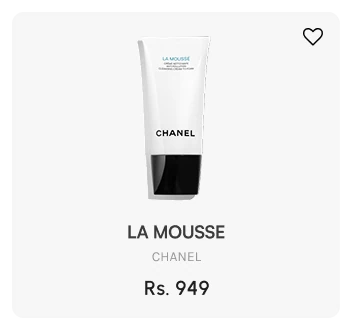
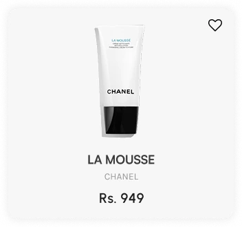
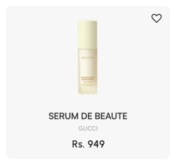
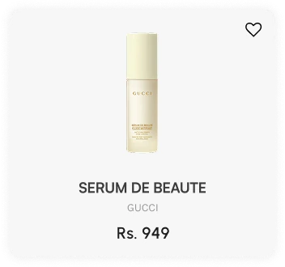
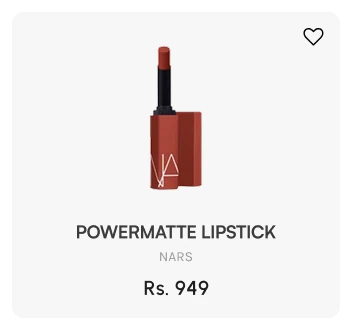
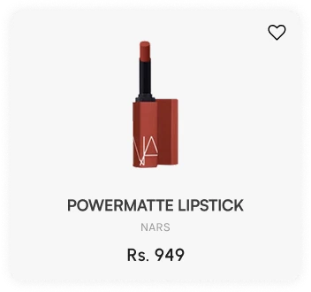
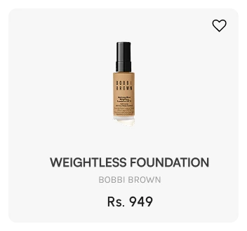
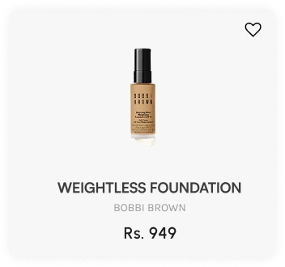
SMALL STATES
The details people feel before they notice
Soft cream at rest, solid black on hover: the one high-contrast moment is the action.
Click the heart. Outline means not saved, filled means saved.
A simple underline on hover keeps the navigation quiet.
BESTSELLERS CAROUSEL
Three pages, one smooth row
Arrows appear only when there's somewhere to go, and the dots show which page you're on. The first page has no back arrow; the last has no next.
Use the arrows
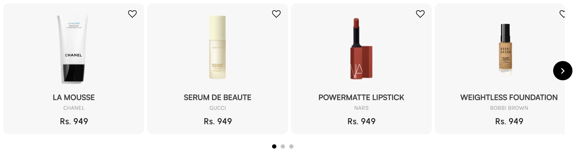
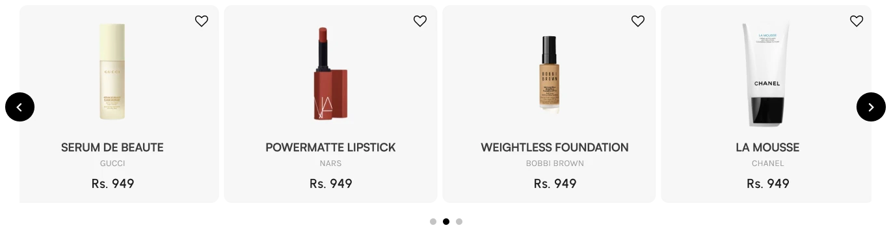
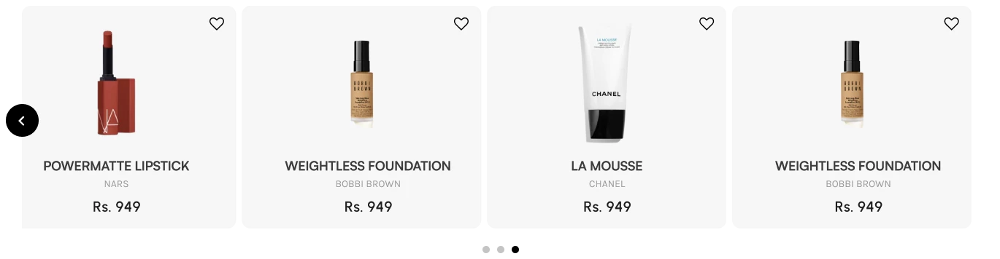
ANNOUNCEMENT BAR
Urgency without clutter
Offers loop continuously through a slim black strip at the top of every page. It pauses when you hover, so a promo code can actually be read.
Hover to pause
TESTIMONIALS
Social proof, kept consistent
Every review uses the same card: photo, name, then the quote, so the eye reads them as a set rather than a wall of text.
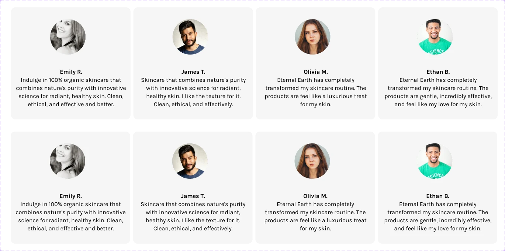
// 03 — DESIGN DECISIONS
Letting the products breathe
01
One quiet palette
Cream, soft gold and plenty of white space carry the "organic" feeling. Black is saved for actions, so buttons stand out without shouting.
02
Calm until intent
Labels, lifts and dark buttons appear on hover. The page stays editorial at a glance and becomes a shop when you reach for something.
03
Components before pages
Designing each piece with its states first meant the landing page was assembled, not drawn, and every interaction was specified for handoff.